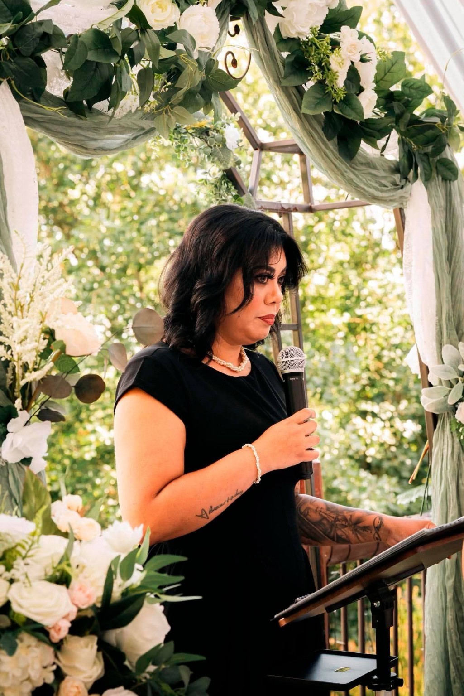
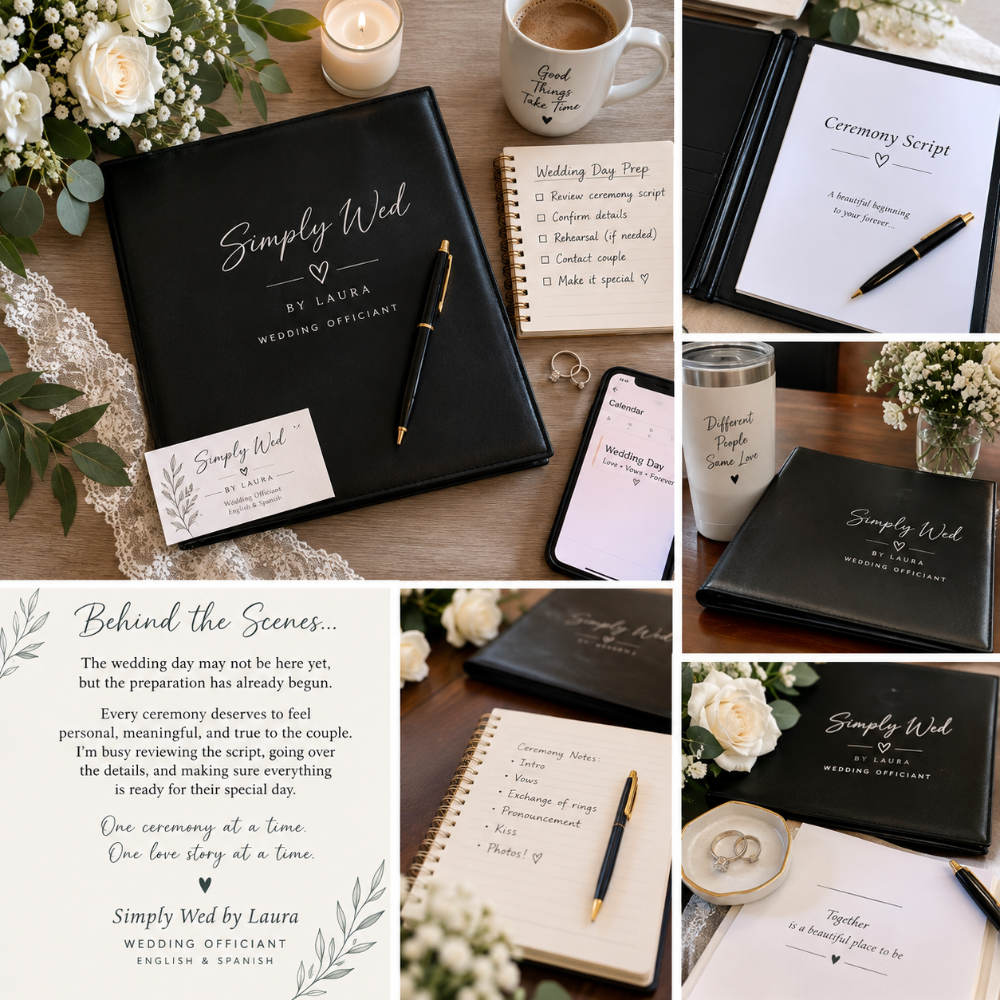
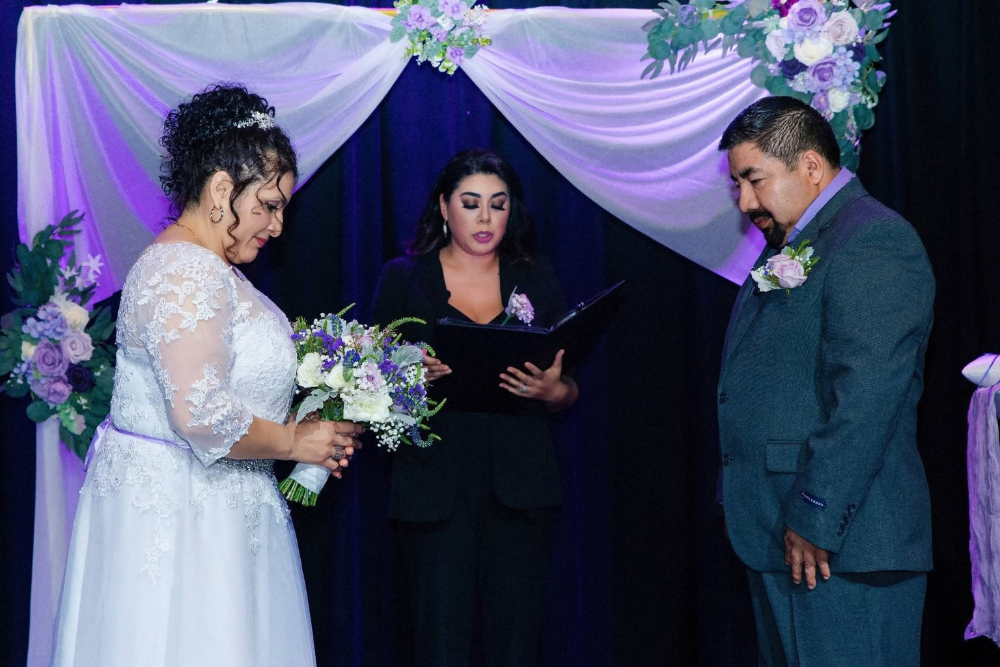
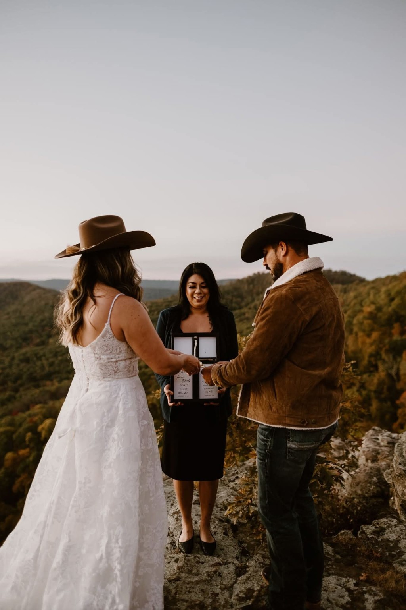

01 / Officiating
Wedding Ceremonies
Personalized ceremonies for weddings, elopements and intimate celebrations. English, Spanish, or a blend of both.
Bilingual wedding ceremonies in English & Spanish, personalized to your story — plus day-of coordination to help you actually enjoy your wedding day.
Now Booking 2026 & 2027

You don't need a cookie-cutter ceremony or another thing to worry about. I help make your wedding feel personal, organized and true to you.
Personalized ceremonies for weddings, elopements and intimate celebrations. English, Spanish, or a blend of both.
Comfortable incorporating traditions such as the lazo and arras while keeping the ceremony meaningful and easy to follow.
Wedding-day coordination available on its own or bundled with officiating so you can focus on celebrating.

My day-of coordination service is for couples who have done the planning and want someone there to keep the day moving, communicate with the right people, and help handle the unexpected.
From the ceremony planning to the wedding day, Simply Wed by Laura is there to help make the moment feel special.


I'm Laura, the owner of Simply Wed by Laura and a bilingual Arkansas wedding officiant. I love ceremonies that feel like the couple — not something pulled from a template.
Whether you're planning an intimate elopement, a bilingual celebration, or a full wedding day where you just need someone to keep things moving, I'm here to make the process easier and the moment more meaningful.
Send me your wedding date, venue and the services you're interested in. I'll let you know if your date is available and we can go from there.
Bilingual • English & Spanish • Arkansas Wedding Officiant